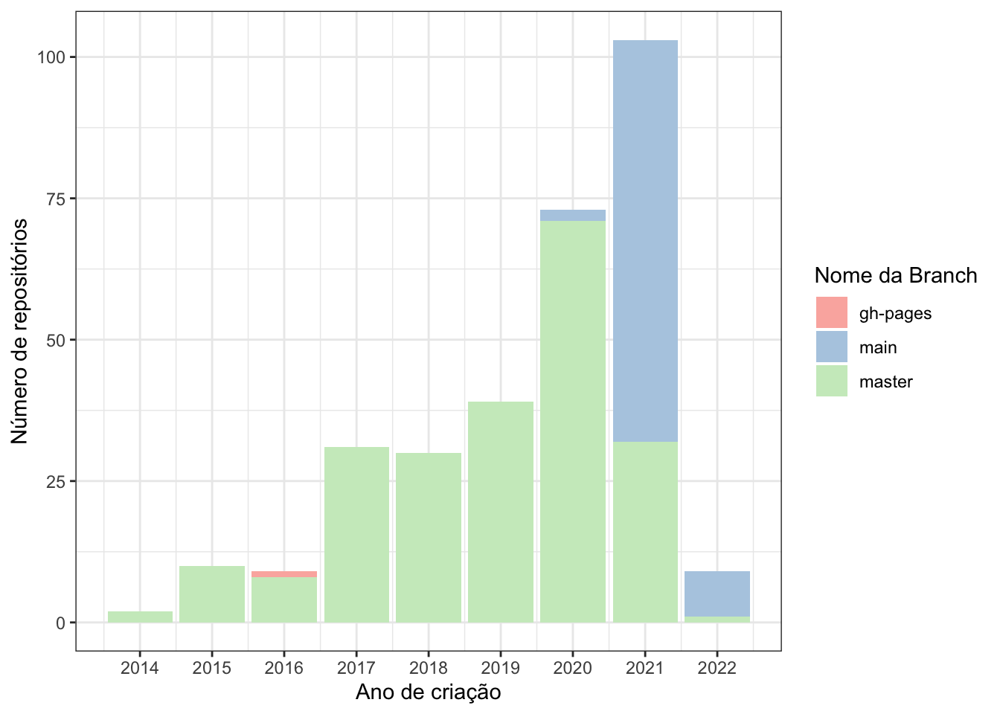

Neste post mostraremos um exemplo usando a API do GitHub.
O GitHub é uma plataforma onde conseguimos hospedar repositórios (pastas com nossos códigos e arquivos) com controle de versão usando o Git, e podemos fazer muitas coisas utilizando a sua API. E como dissemos no post anterior: “o primeiro passo para acessar qualquer API é procurar uma documentação”. A boa notícia é que a documentação da API do GitHub está disponível em Português e é bem detalhada!
Existem muitas ações possíveis utilizando essa API. O que escolhemos para esse exemplo é buscar os repositórios que pertencem à uma organização.
Segundo a documentação, para consultar os repositórios que pertencem à organização octokit, podemos utilizar a seguinte busca:
GET /orgs/octokit/repos
O equivalente a isso usando o pacote httr é:
# url_base - nunca muda na mesma APIurl_base <-"https://api.github.com"# endpoint - é o que muda o resultadoendpoint <-"/orgs/octokit/repos"# precisamos colar os textos para criar o linku_github <-paste0(url_base, endpoint) # ver como o texto ficou colado# u_github # > "https://api.github.com/orgs/octokit/repos"# fazer a requisição do tipo GETr_github <- httr::GET(u_github) r_github
Podemos acessar o resultado usando a função httr::content(), porém não vamos colocar o resultado no post pois ficaria muito longo.
# httr::content(r_github)
O que é o pacote gh?
O pacote gh permite acessar a API do GitHub. A lógica mostrada anteriormente se aplica para esse pacote também: precisaremos consultar a documentação para verificar como fazer alguma tarefa com a API.
Primeiro exemplo com o pacote gh
Neste exemplo, vamos buscar as informações sobre os repositórios que são organização Curso-R no GitHub, gerar um dataframe, e ao final fazer uma visualização simples.
Informações gerais da organização Curso-R
Podemos buscar informações sobre a organização da Curso-R no GitHub:
A sintaxe do pacote gh é similar ao glue. Quando queremos buscar uma informação que está em uma variável (no caso “curso-r”), colocamos os {variavel} no primeiro argumento e escrevemos variavel= nos argumentos seguintes.
Como vimos, o resultado é uma lista. Para consultar o número de repositórios públicos, podemos usar o $ para acessar essa informação dentro da lista:
gh_curso_r$public_repos
[1] 313
Olha só, a Curso-R tem atualmente 313 repositórios públicos no GitHub! Temos muitos repositórios pois criamos um diferente para cada curso, para que quem faz aula com a gente tenha sempre um lugar para olhar todos os materiais, de forma organizada e independente.
Acessando informações de repositórios
Podemos buscar informações sobre os repositórios que pertencem à organização Curso-R no GitHub:
repositorios_cursor <- gh::gh("GET /orgs/{org}/repos", org ="curso-r")# A classe que retorna é uma listaclass(repositorios_cursor)
[1] "gh_response" "list"
# É uma lista grande!length(repositorios_cursor)
[1] 30
Esse código retornou informações de apenas 30 repositórios. Portanto, precisamos repetir o processo para obter informações de todos os repositórios.
Iterando com purrr e o pacote gh
A documentação do pacote aponta que é possível buscar informações de 100 repositórios por vez. Se queremos buscar todos os repositórios, primeiro precisamos calcular quantas vezes vamos repetir o processo todo:
numero_repos_publicos <- gh_curso_r$public_repos# podemos buscar 100 repositórios por vez,# então podemos dividir o numero de repositorios# por 100, e arredondar "para cima"# (é para isso que a função ceiling() serve!)numero_paginas <-ceiling(numero_repos_publicos/100)numero_paginas
[1] 4
Precisaremos repetir 4 vezes! Agora podemos usar a função purrr::map() para repetir o acesso à API quantas vezes forem necessárias para obter as informações de todos os repositórios da Curso-R:
repos_cursor <- purrr::map(1:numero_paginas, .f =~gh::gh("GET /orgs/{org}/repos", org ="curso-r", # organizacaotype ="public", # tipo de repositorio sort ="updated", # forma de ordenar a buscaper_page =100, # numero de resultados por paginapage = .x # numero da pagina que será substituido ))
O resultado ainda é uma lista… podemos usar a magia do pacote purrr e transformar essa lista em um dataframe:
Vamos fazer mais uma etapa de organização dos dados: são muitas colunas, e não precisaremos de todas para terminar o post. Também filtramos a base para remover os forks, já que não seriam repositórios da Curso-R originalmente.
Em 2020, o Caio escreveu um post sobre o uso do termo ‘master’ no GitHub. Lá no post é explicado sobre a questão da substituição do termo ‘master’. Em 2020 a GitHub anunciou que faria a transição para o termo main (principal), e desde então muitas pessoas e organizações estão renomeando a branch principal de seus repositórios para ‘main’(inclusive existe um post no blog da RStudio sobre isso).
Usando os dados obtidos nesse post, vamos explorar os repositórios da Curso-R e averiguar qual é o nome da branch principal dos repositórios ao longo do tempo?
library(ggplot2)main_percent <-mean(df_repos_cursor$default_branch =="main")main_percent <- scales::percent(main_percent)df_repos_cursor |> dplyr::count(ano_criacao, default_branch) |>ggplot() +geom_col(aes(y = n, x = ano_criacao, fill = default_branch)) +theme_bw() +scale_x_date(date_labels ="%Y", date_breaks ="1 year") +scale_fill_brewer(palette ="Pastel1") +labs(x ="Ano de criação", y ="Número de repositórios", fill ="Nome da Branch")

É possível ver que em 2021 o uso do termo ‘main’ para nomear as branches principais foi muito mais usado! Atualmente, o percentual de repositórios main é de 26% e esperamos que isso aumente com o tempo. Outra coisa legal do gráfico é ver como a criação de repositórios na organização da Curso-R foi crescendo ao longo do tempo!
É isso! Dúvidas, sugestões e críticas, mande aqui nos comentários. Postem também quais exemplos, dentre os que foram listados, vocês gostariam de saber mais!!
Se você quiser saber mais sobre acessar APIs, o curso de Web Scraping é uma ótima oportunidade!